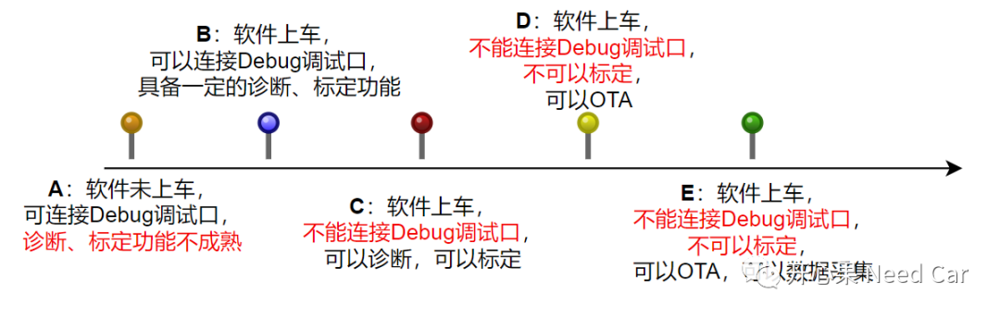
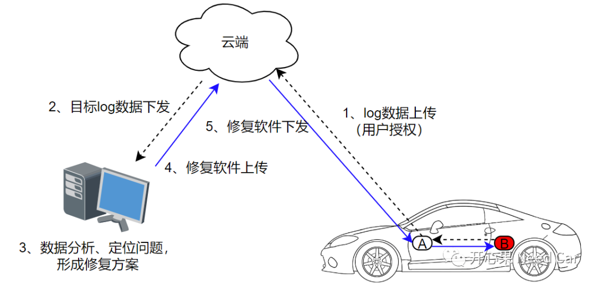
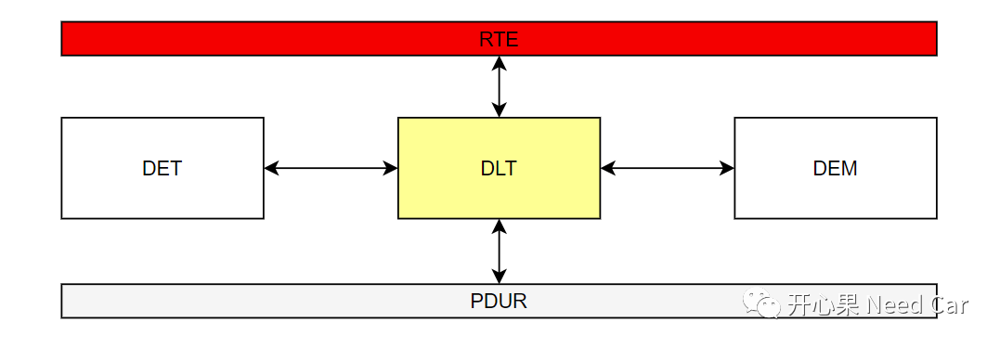
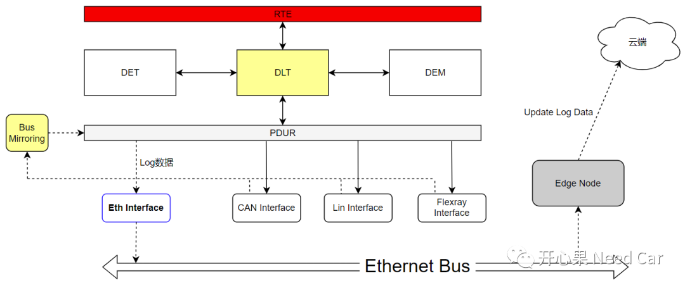

开心果 Need Car · 2023-11-17T07:06:00+08:00 · 微信原文
如标题：工程偶发类问题，如何查？怎么查？对于这个问题，或许不仅仅是困扰我，可能也困扰着解决问题的每一个小伙伴。问题之所以难查，往往有如下特点：问题出现频率低，没有采集到有效数据log，出现问题时的工况不清晰，问题无法短期复现，或者台架模拟，Bug问题不能复现...这样的Bug，除了苦笑，应该如何破局呢？本文，试着从产品的不同时间节点（或者说产品成熟度），讨论每个时间节点可以采用的调试手段，也展望一下未来的可能手段。
1、不同阶段，软件可用的调试手段

A阶段：
在A阶段，产品可能处于A样件阶段，软件还未上车，产品的Debug调试口可用，如果在此阶段出现软件Bug问题，不管问题难度如何，只要问题可以概率性复现，均可通过Debug方式（甚至使用调试工具的Trace功能）进行软件追踪，定位问题的具体位置，进而修复Bug。这个阶段，软件的诊断和标定功能可能还不成熟，或者说还未完成开发，所以，还不能使用这两种方式调试。在Debug口可用的情况下，通常，软件工程师会将其作为调试问题的第一选择。
在B阶段，产品处于DV（Design Verification）或者TT（Tooling Trial）样件状态，产品可以装车测试，也就意味着软件已经可以上车测试，此阶段，车辆依然可以预留一些外置物理接口，也包括Debug调试口，所以，此阶段出现偶发性软件Bug问题，依然可通过Debug方式进行软件追踪和问题定位。虽然，此阶段，软件具备了一定的诊断和标定功能，但是，最优的Bug排查方式还是通过Debug口，用调试工具确认软件的问题点。
C阶段：
在C阶段，产品可能处于C样件（PV，Production Validation）状态 ，此阶段，车辆会先进行小批量试生产，销售给对少部分内购用户，用于产品稳定性测试（也就是灰度测试）。对于单件控制器来说，Debug调试口或许可用，也可能会将Debug口封掉，处于不可使用状态。但是，此阶段，软件的诊断和标定功能可用，可以通过OBD（On Board Diagnostics）口或者标定调试口调试。当出现Bug问题时，不管是诊断调试还是标定调试，能采集的信息量毕竟有限，对偶发类Bug的解决，可能并没有太大助力。
D阶段：
在D阶段，虽然和C样件没有太大区别，但是，此阶段，车辆已经处于批量量产阶段，车辆会发往4S店销售。因此，车辆不能通过Debug口调试，也不能通过标定口调试。此阶段，依然可以通过OBD口进行诊断调试，如果车辆支持OTA（Over the Air）诊断功能，也可以通过OTA诊断方式获取部分信息。不管使用OBD诊断方式，还是OTA诊断方式（远程诊断），对于偶发类Bug问题，获取的信息量有限，解决问题的效率也会大打折扣。
E阶段：
在E阶段，车辆已经在终端用户手上，如果想要获取车辆Bug时的数据信息，需要联系客户到店或者去客户现场，通过OBD诊断口获取数据。也可以通过OTA方式（需要用户授权），远程读取存储的诊断信息，用于Bug问题的排查，但是，此方式获取的数据量有限，如果对于分析问题没有帮助，那么，Bug的解决，可能收效甚微。
很多时候，难查的Bug问题就是在E阶段，面对这样的工程场景，如何破局呢？
2、数据采集

（三）数据镜像处理
虽然OTA采集数据方案不错，但是，我们不得不思考一个问题：数据采集对CPU实时性的影响。对于MCU级的控制器，对于实时性要求极为严苛，如果为了采集数据而牺牲CPU实时性，那么，这件事的损失要大于收益，得不偿失，这就有悖数据采集的初衷，甚至问题就可能因为数据采集而触发。所以，如何有效的采集数据，且尽可能避免对控制器功能影响，是我们必须思考的一个问题。如何做呢？答：最起码，应该使用一套规范的软件框架或者模块，eg：Autosar的Dlt (Diagnostic Log and Trace) 模块。该模块可以收集DEM（Diagnostic Event Manger）、DET（Default Error Tracer）、SWC、RTE等模块的日志信息，示意如下：

为了最大程度的降低CPU负载，提高实时性，可以将Dlt模块收集的信息（信息可以来自不同总线）通过Bus Mirror模块传输给专用的log传输总线（eg：传输log专用的ethernet总线），之后将信息再传给边缘节点，以此平衡CPU的实时性和数据吞吐量，示意如下：

往期精彩回顾
工程问题：CAN Transceiver模式选择不当，导致ECU不在线